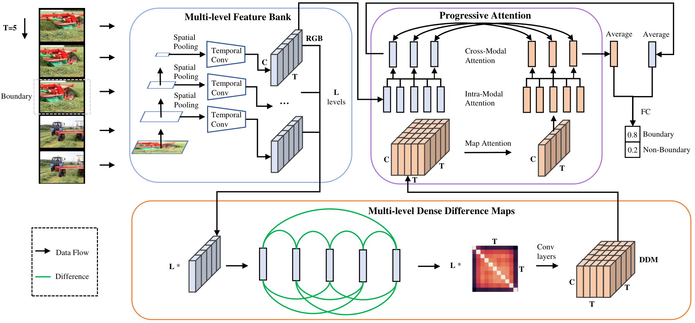
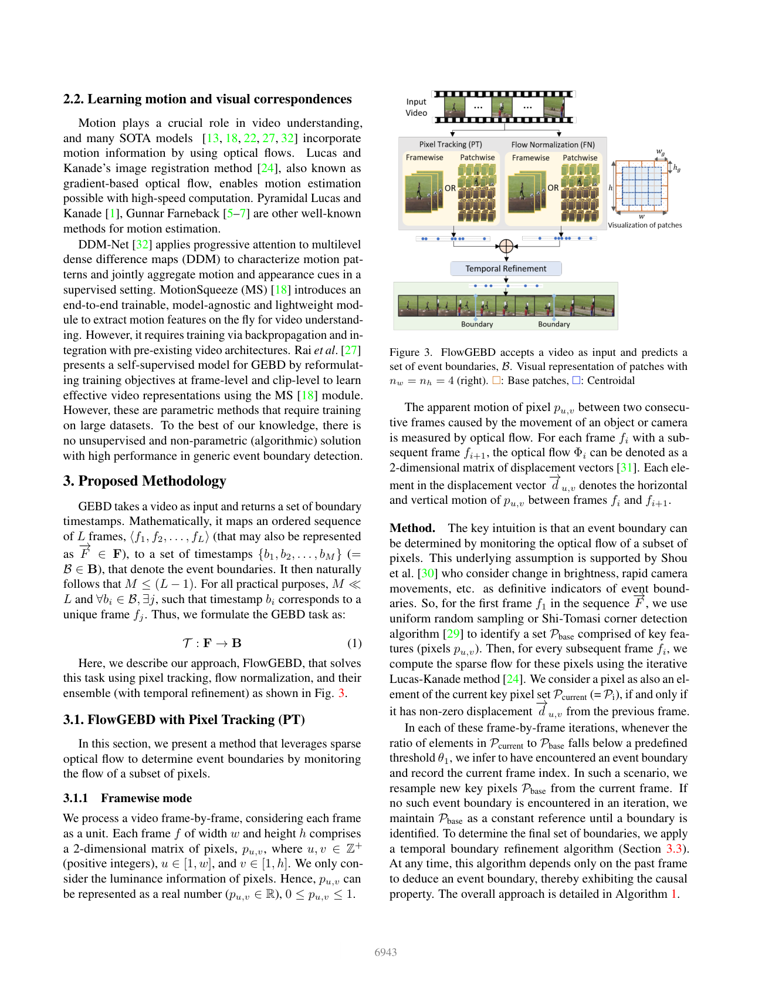
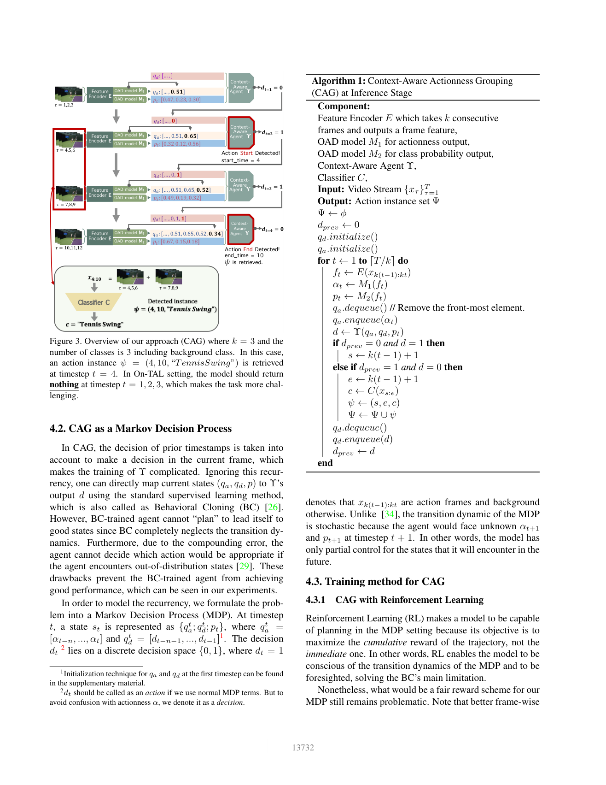
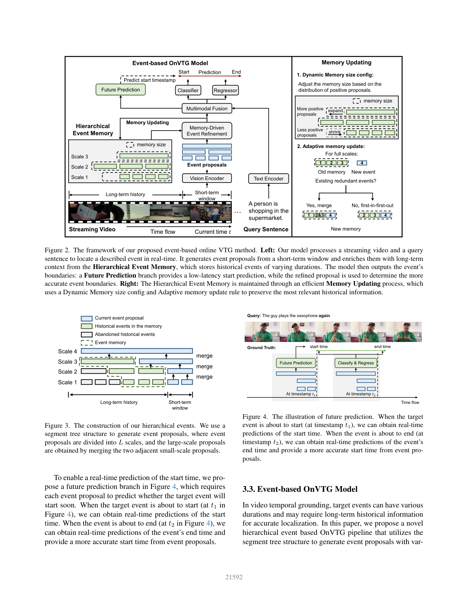
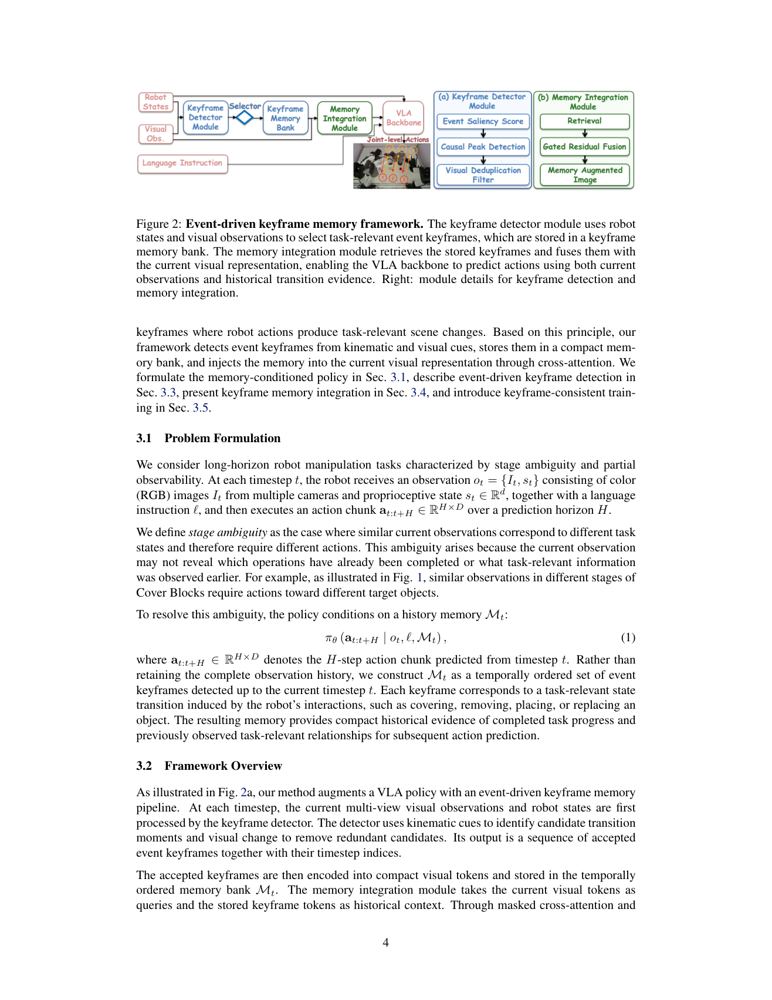

VLA 历史关键事件检测：P0 论文精读
五篇 P0 工作｜按 paper-deep-reading skill 编写｜方法图优先取原论文源码或 PDF，实验只使用文字和表格
前置汇总：五篇如何拼成一个 VLA 事件记忆系统
一句话路线：FlowGEBD/KEMO 先以低成本、因果信号提出候选；DDM-Net 用 motion 与 appearance 共同确认；CAG-QIL 决定何时把候选提交为事件；Hierarchical Event Memory 决定不同尺度事件如何留存；KEMO 则验证这种稀疏事件记忆确实可改善长程 VLA 控制。
| 论文 | 解决的关键环节 | 对本课题最可复用的部件 |
|---|
| DDM-Net | 候选边界是否有语义 | 多尺度差分 + 两阶段跨模态确认 |
| FlowGEBD | 低成本因果候选 | 轨迹/flow 峰值与时间 refinement |
| CAG-QIL | 事件何时提交 | pending → committed 的在线 grouping |
| HEM | 长期记忆怎样压缩 | 近细远粗、多尺度预算与去冗余更新 |
| KEMO | VLA 中如何落地 | robot motion + visual filter + memory fusion |
P0-1DDM-Net：Progressive Attention on Multi-Level Dense Difference Maps
Tang et al. · CVPR 2022｜原论文 / 项目页
1. 核心摘要
DDM-Net 面向 Generic Event Boundary Detection（GEBD）：不预设动作类别，只判断人类会自然感到“事件切换”的时刻。它以多层视觉特征差替代单一光流，再用 progressive attention 对 RGB appearance 与差分表示进行两阶段融合。Kinetics-GEBD 验证集上，F1@0.05 为 0.764，PC 为 0.625。
2. 研究动机
传统稀疏光流只看局部像素移动，可能把连续运动当成边界，也会遗漏外观或关系变化。直接拼接 RGB 与 motion 又容易把噪声混在一起。作者的切入点是：运动应以多层语义特征的差异表示，并且必须由外观语义共同确认。
3. 方法论

原论文 Fig. 2（从 arXiv LaTeX 源码的 overview.pdf 转换）。蓝框是多层特征库，橙框是多层稠密差分图，紫框是渐进注意力。
输入是以候选帧为中心的短片段。骨干网络把不同层的时空特征放入 feature bank；DDM 对不同时间/层级特征做差，形成稠密 motion representation。随后先进行 intra-modal attention，让 RGB 和 DDM 各自选出有效时刻；再做 cross-modal attention，让两流相互核验；两路 logits 融合为边界概率。
3.1 核心机制与执行逻辑
feature bank 同时保留 spatial 与 temporal 层级，避免只用最后层而失去局部变化。DDM 的差异可直观写成 D(i,j)=||f_i-f_j||_2；它只是变化证据，不是边界判定。训练时用 balanced sampler 应对非边界帧远多于边界帧的问题；推理用阈值加局部最大值选择最终时刻。
4. 实验与结果
Kinetics-GEBD：PC 的 F1@0.05 为 0.625，DDM-Net 为 0.764；TAPOS：PC 为 0.522，DDM-Net 为 0.604。消融中，RGB+DDM 的平均 F1 为 0.8726，高于 RGB difference 的 0.8440；intra+cross attention 的 0.8726 高于简单平均的 0.8543。这支持多层差分与两阶段融合均有独立价值。
5. 优势与局限
优势是把“哪里发生变化”与“变化是否具有语义”分开处理，且消融充分。局限是原始设定可能使用中心片段，不是严格因果；也没有夹爪、接触、对象关系等具身信号。迁移到 VLA 时应改为历史窗口，并以 robot state 作为第三证据流。
6. 总结
最值得借鉴的是：appearance 与 motion 不能直接相加。先在每个模态内找证据，再让模态间相互确认，才适合成为历史关键事件的语义门。
P0-2FlowGEBD：What’s in the Flow?
Gothe et al. · WACV 2024｜原论文 / 项目页
1. 核心摘要
FlowGEBD 研究一个更轻量的问题：不用训练神经网络，仅凭运动线索能否找通用事件边界？它组合像素跟踪与 flow normalization 两个非参数算法，在 Kinetics-GEBD 的 F1@0.05 达到 0.713，并报告 TAPOS 平均 F1 为 0.623。
2. 研究动机
许多 GEBD 模型依赖大量标注、光流预计算或复杂网络。作者将问题缩小为“运动连续性何时被破坏”，希望给出低计算、无需训练的候选边界器。该假设适合做流式系统的第一层，但不声称运动本身足以恢复全部语义。
3. 方法论

原论文 Fig. 3（PDF 高分辨率页裁取）。两条路径分别为 Pixel Tracking 与 Flow Normalization，末端进行 temporal refinement。
Pixel Tracking 在基准帧采样关键像素并追踪；当仍能有效追踪的点相对基准点明显减少时，产生边界证据。Flow Normalization 通过归一化运动场提供第二个证据。二者可按 frame/patch 运行，最后用时间 refinement 组合；在任意时刻只依赖当前与过去帧，因此满足 causal。
3.1 核心机制与执行逻辑
方法输出的是 timestamp 集合，而非类别、对象关系或事件文本。它的工程意义是将昂贵 VLM 从逐帧运行改成只在候选峰值后运行。对机器人应在任务对象、夹爪和末端附近取点，并用末端整体运动抵消相机/手臂共同运动。
4. 实验与结果
论文主要比较无监督方法，并报告其在 Kinetics-GEBD 的 0.713 F1@0.05 高于所比较的无监督基线；TAPOS 验证集平均 F1 为 0.623。该证据只说明 motion-only 在通用边界上可用，不能证明抓取成功、放置完成等任务状态可由 motion 单独判别。
5. 优势与局限
优势是因果、非参数、可解释，适合零训练基线。局限是镜头抖动、遮挡、空中复位或快速但无语义的运动都会产生假阳性。VLA 中应将它定位为 pending-event generator，必须由视觉状态差与机器人接触/夹爪状态确认。
6. 总结
FlowGEBD 最有价值的不是替代语义模型，而是证明“候选生成”和“语义确认”可以解耦：前者可极轻，后者才调用更贵的模型。
P0-3CAG-QIL：Context-Aware Actionness Grouping via Q Imitation Learning
Kang et al. · ICCV 2021｜原论文 / 项目页
1. 核心摘要
CAG-QIL 明确提出 Online Temporal Action Localization（On-TAL）：系统必须在视频流中立即输出动作实例，不能访问未来帧，历史 proposal 也不能靠后处理重写。它以 context-aware actionness grouping 将帧级分数聚为实例，并使用 Q imitation learning 学习在线决策。
2. 研究动机
离线时序动作定位可以浏览整段视频、事后 NMS 或回填边界；真实流式场景做不到。逐帧 Online Action Detection 又只回答“正在发生什么”，没有回答实例从何时开始、何时结束。作者因此把在线 grouping 视为顺序决策，而非独立帧分类。
3. 方法论

原论文 Fig. 3（PDF 高分辨率页裁取）。图展示 CAG 在流式 actionness 序列上维护并闭合动作实例。
模型读取当前及历史 actionness/类别上下文，选择继续当前实例、开始实例或关闭实例。CAG 将局部 actionness 信息组合成连续 proposal；Q imitation learning 从专家策略产生的数据库学习决策，避免为每个在线行为手工设计奖励。输出为当前时刻可提交的实例区间及类别。
3.1 核心机制与执行逻辑
这一结构对记忆写入很重要：条目不该在第一个高分帧就永久落库，而应经历候选、持续、关闭三个状态。对 VLA 可将 actionness 换成 task-eventness，将类别换成 grasp/place/open 等谓词或开放词汇状态变化。
4. 实验与结果
论文在 THUMOS14 与 ActivityNet1.3 上评估 Online TAL，并说明该框架也可用于 online action-start detection。论文的关键贡献是在线协议和 grouping 决策；部署到机器人时应增加 detection delay、误提交率和失败事件召回，不能只复用离线 mAP。
5. 优势与局限
优势是严格承认不可回改的因果约束。局限是类别空间固定、输入主要为视觉动作分数，未覆盖开放世界对象关系。VLA 版本需要接入 task relevance、接触、物体状态和不确定性。
6. 总结
CAG-QIL 给历史记忆的启示是“commit 时机”本身是一个模型问题：候选事件与已确认事件应分开保存。
P0-4Hierarchical Event Memory for Accurate and Low-latency Online Video Temporal Grounding
Zheng et al. · ICCV 2025｜原论文 / 项目页
1. 核心摘要
该工作解决 Online Video Temporal Grounding：给定语言 query，在不能看到未来帧的长视频流中尽早定位目标事件。核心是把历史从帧队列改为多尺度 event proposal memory，并增加未来预测分支缓解在线定位延迟。
2. 研究动机
只保存最近帧会遗忘早期信息；无限保存帧又不可能。更关键的是，事件具有不同持续时间，逐帧分数难以表达“子事件属于更大事件”的层级结构。作者因此用事件本身作为存储单位，而不是把所有帧压成同粒度 token。
3. 方法论

原论文 Fig. 2（PDF 高分辨率页裁取）。流式视频和文本 query 进入短窗 proposal、分层事件记忆和 future prediction 分支。
当前短窗口内先以 1-D 卷积生成小尺度 proposal；相邻 proposal 递归合并，形成多尺度 segment tree。每尺度 memory 保存历史事件并参与当前 proposal 的构造和 refinement。文本 query 通过 decoder 对 proposal 分类、回归 start/end offset；future branch 则预测即将开始的目标事件和起点。
3.1 核心机制与执行逻辑
memory budget 不是平均切分：论文统计各尺度正样本事件的频率，为更常见的持续时间分配更多条目，并用自适应更新合并冗余事件。对 VLA，这对应 L0 近期关键帧、L1 秒级交互事件、L2 子任务摘要的三级存储。
4. 实验与结果
论文在 TACoS、ActivityNet Captions 与 MAD 上报告 OnVTG 的 SOTA 表现，并用 accuracy-latency 曲线说明 future prediction 的作用。这里的实验证据针对语言查询的视频定位，不是无查询写入或机器人控制；迁移时需额外测 Recall@memory budget 与 control recovery。
5. 优势与局限
优势是把长期存储、精细起止边界和低延迟放进同一架构。局限是模型以 query 为条件，真实 VLA 常需 query-agnostic 先写库、之后再检索；并且缺少动作/触觉状态。
6. 总结
最值得复用的是“近期细、远期粗”的事件层级与按尺度分配预算，而不是直接照搬其语言 grounding head。
P0-5KEMO：Event-Driven Keyframe Memory for Long-Horizon Robot Manipulation with VLA Policies
Zeng et al. · arXiv 2026｜原论文 / 项目页
1. 核心摘要
KEMO 是 P0 中最贴近 VLA 历史关键事件检测的工作。它不保存稠密轨迹，也不依赖在线任务分解，而是以机器人运动学显著性提出关键帧，再用视觉去重确认，将被选帧编码成有序 memory token 注入 π0.5。六个真实双臂任务上，聚合 TSR 从 27.8% 提升到 51.4%，SCR 从 42.3% 提升到 76.4%。
2. 研究动机
长程操作中，当前画面可能在不同阶段相似，但正确动作取决于之前是否完成了放置、覆盖、补充或替换。固定间隔采样浪费存储在静态帧，近期窗口又会丢掉早期关键转移。作者的观察是，真正决定进度的往往是少数交互状态变化的 keyframe。
3. 方法论

原论文 Fig. 2（PDF 高分辨率页裁取）。机器人状态先产生 event saliency 与因果峰值，再经视觉过滤成为 keyframe memory，随后通过 cross-attention/gated fusion 注入 VLA。
KEMO 先由最近关节位移构造 motion saliency；运动减慢处形成候选局部峰。候选再与最近已接受关键帧比较视觉差异，过滤视觉上重复的停顿。保留帧经视觉编码器压成按时间排序的 memory tokens；current visual tokens 对 memory 做 masked cross-attention，门控残差融合后送入 VLA backbone 输出 action chunk。
3.1 核心机制与执行逻辑
论文还让事件关键帧附近训练样本具有更高权重，使训练目标与记忆选择对齐。该流程包含清晰的因果延迟：峰值需要等待一个短窗口确认，但不访问未来整段轨迹。对于外界移动或语言任务切换，原始 motion saliency 可能不足，实际系统应增加对象关系与 instruction-change 信号。
4. 实验与结果
真实双臂六任务、每任务 12 次试验，任务包含 2–6 个计分子阶段，平均时长 28–95 秒、830–2846 步。相对无记忆 π0.5，TSR 增加 23.6 个百分点（27.8%→51.4%），SCR 增加 34.1 个百分点（42.3%→76.4%）。论文消融指出 event-driven selection 优于均匀采样和近期帧保留，门控融合与 keyframe-aligned loss 提供互补增益。
5. 优势与局限
优势是将“何时写记忆”变成低开销、可因果执行的检测问题，并用真实控制结果验证。局限是 2026 预印本，阈值/传感器频率/跨机器人泛化仍需复核；视觉去重也不等于对象级状态理解。
6. 总结
KEMO 给当前课题的最直接模板是 motion candidate + visual confirmation + ordered memory fusion。下一步可把其二元视觉过滤扩展为 appearance、object relation、contact、instruction 四路确认。
资料出处与图像说明
所有论文事实与数值应以每篇的原始链接为准。DDM-Net 的架构图来自 arXiv LaTeX 源码；其余方法图来自公开论文 PDF 的高分辨率页面裁取。根据当前 skill，未插入实验结果图，所有实验结论以文字和表格呈现。